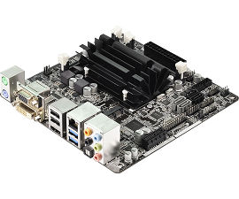
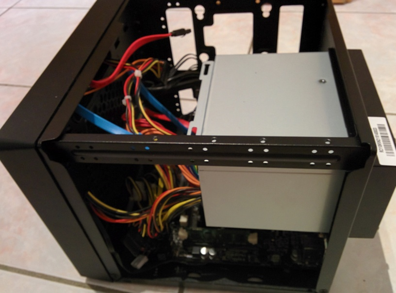

How to build a NAS for 300€
This post describes the story of how I built a new NAS and media center from scratch, including hardware and software part.
The previous setup
It all started a few weeks ago when one of the drives on my NAS started making a weird noise. Since 2013, I was running an old Optilex GX270 equipped with two brand new WD Blue 1TB in ZFS raid 1 and running FreeBSD. The motherboard offers “wake on lan” from full shutdown, which was great as I didn’t need it to be constantly running. I was quite happy with this setup, but I was waiting for something to go wrong to upgrade to newer hardware.
The new setup
I wanted a small and powerful enough setup so that it could serve as a media center under my TV. I was thus looking for a budget configuration with a case that could fit under my TV stand and that could host at least 2 and ideally 4 3.5’’ HDDs.
The case
The first piece I chose was the case. I picked the Cooler Master Elite 110 as it could host 3 3.5’’ HDDs or 2 3.5’’ + 2 2.5’’ HDDs. It’s a cubic case of around 20-25 cm, the perfect size to fit on my TV stand. As for the price, it was under 50€. The drawback is that everything is packed and the hard drives are screwed to the case, so not easily replaced. But at this price, I didn’t expect hot swappable bays.
The Motherboard and CPU

I didn’t need huge amount of power, so I chose a motherboard with an integrated CPU and a graphical circuit. ASRock ITX motherboard exactly fits my need, and costs only 80€ with the integrated CPU. This is the subsidiary brand of Asus, created to sell their low cost products without impacting their reputation. I preferred an Intel CPU for their great Linux support, although the AMD APU are usually good choice for such use as their integrated GPU is much more powerful. I therefore chose the ASRock Q1900-ITX, with the following specifications:
- An Intel Quad-Core J1900, with 2.4GHz and 2M Cache, a low power but powerful processor with a decent integrated GPU. There are no fans to cool the CPU, so it is perfect for a silent configuration. Also, I could barely reach the 50°C with maximum load after 10 minutes, and the compilation of a Linux Kernel took less than twice as much time as my Intel i7-2630QM, which reached the 90°C.
- Two RAM slots (8GB each), more than enough for future upgrade.
- Up to 4 SATA ports (2 SATA2 and 2 SATA3), exactly the number required to fill the case.
- Realtek Gigabit Ethernet controller for high speed file sharing. Although my router is limited to 100Mbps bandwidth, I plan on investing in a Gigabit router soon.
- DVI, VGA and HDMI ports are all available so you are sure to find a way to connect your device to any screen
- 7.1 HD Audio
- USB 3.0
- PCIe, COM and Print Port
Nothing exceptional, but everything you except to find is there and you won’t have any surprise. I was also surprised to see two SATA cables provided with the motherboard.
The power supply
As for the power supply, I bought a FSP 350W 80PLUS. It is a bit too powerful for the current setup, but it is cheap (around 40€), from a renowned brand and with high power efficiency. It also has all the connectors you need for a small configuration like the one I use. There are only 3 SATA connectors but they can be extended using the two Molex connectors and a proper adapter.
Storage
I only bought one WD Green 2TB for arround 80€ as I already had my two other 1TB hard drives from the previous configuration. This enabled me to have up to 2TB of data with redundancy. I also didn’t see the point of buying expensive WD Red, which are supposed to be better for NAS. Indeed, my server would only be up a few hours per week.
RAM
I had 2 2GB SODIMM RAM sticks to spare as I upgraded the memory on my laptop so I used them for the server. 4GB is enough for me, but considering the price of the RAM these days I would recommend to buy at least 8GB of RAM, which you can find for 50€.
Assembling the NAS
The next step was to assemble everything. This was pretty straightforward, and the case provided enough screws for the 3 HDDs, the motherboard and the power supply. The only problem I had was the SATA cables. In fact, the case is designed such that the drives are turned towards the outside of the case. This made it impossible to use the right-angled cable which was provided. I also tried to use them on the motherboard, but the ports are placed such that the cable is covering another SATA port of the board. In my case, I was lucky to have 2 straight SATA cables that I used for the SATA3 ports, and I plugged my right-angled cable on the SATA2 port. But if you buy cables for this case, I highly recommend buying left-angled cables.

Then, I added the power supply.
And finally, I added the 3 drives. The last one is on the opposite side of the picture.
Setting up the UEFI
The last step was to setup the UEFI to be able to wake from LAN and USB, as the motherboard is capable of both. I also needed to disable Windows 8 fast boot and activate legacy MBR boot. The interface is minimalistic but it is easy to find the required options. And now, we are ready to setup the system.
Conclusion
With this setup, you now have a NAS for just over 300€, with possibility to upgrade and 2To of hard drive. The configuration is powerful enough and compact enough to be used as a media center. In the next post, I will discuss the software setup.